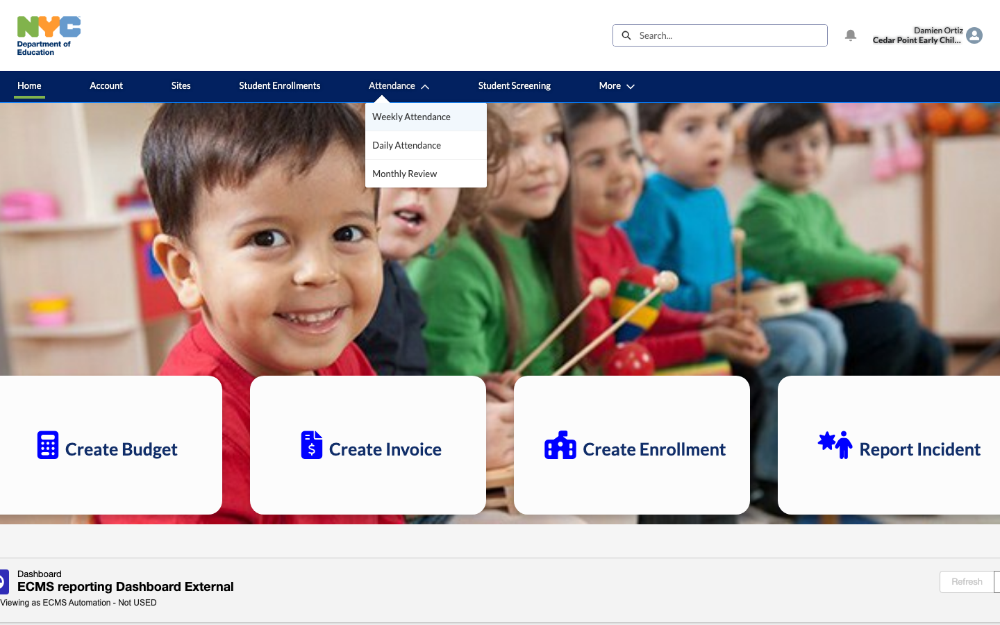
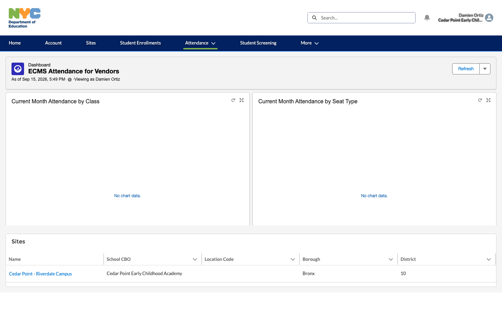
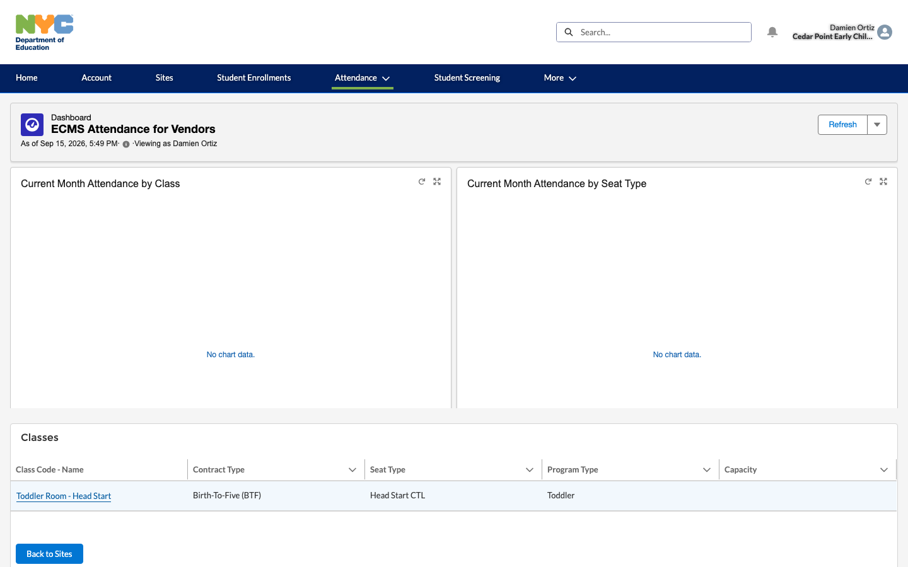
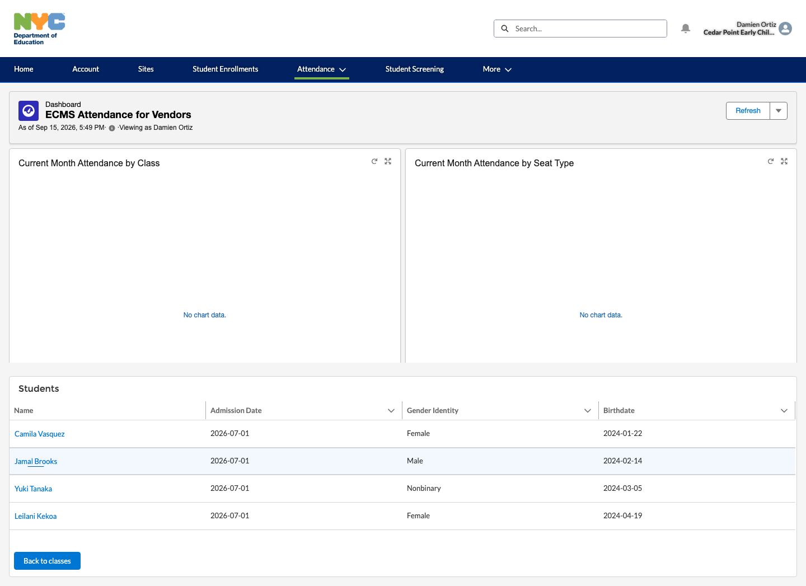
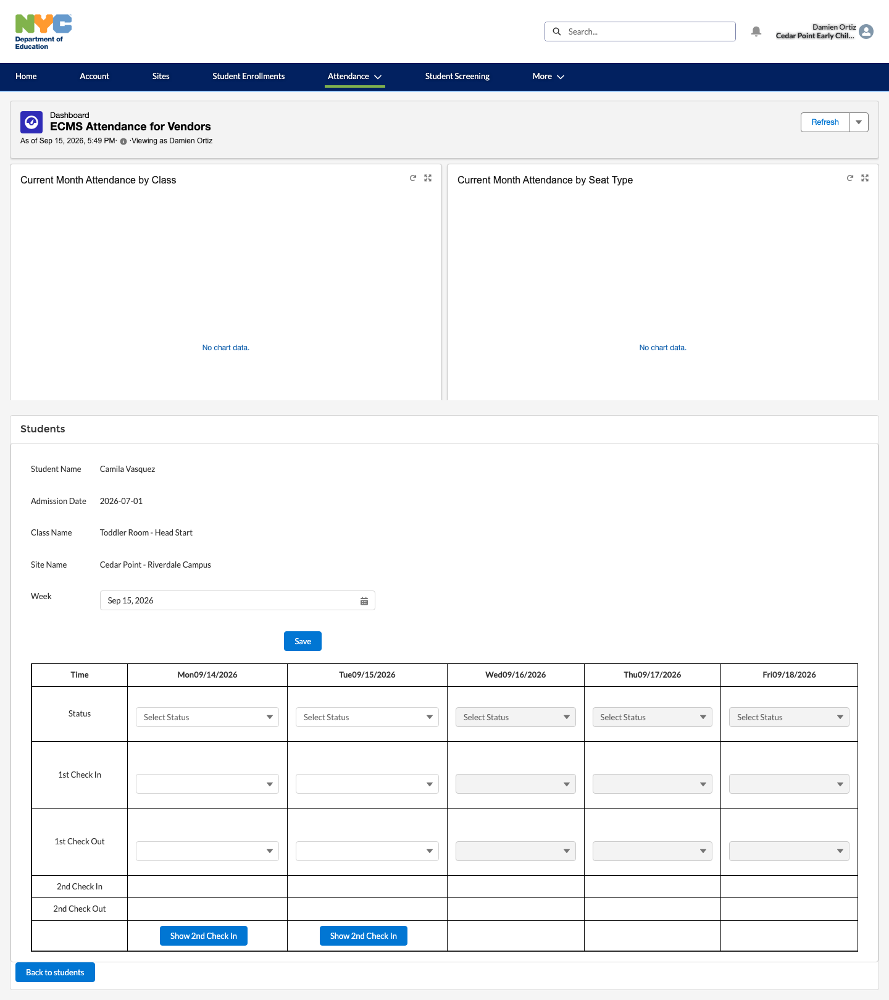
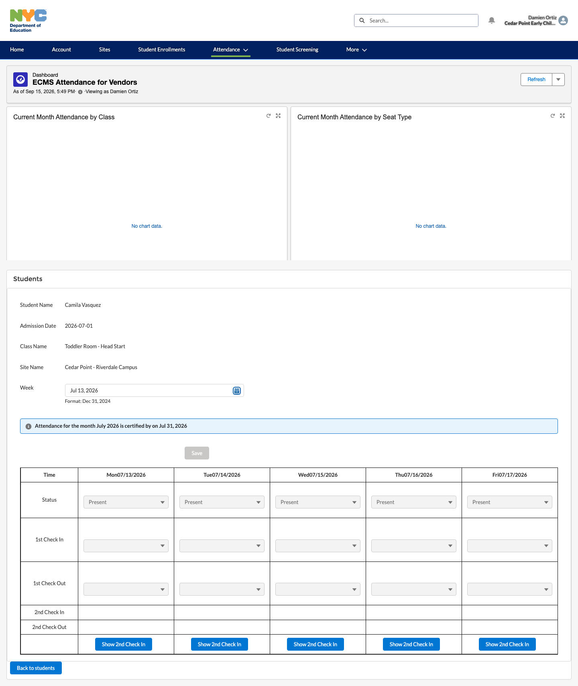
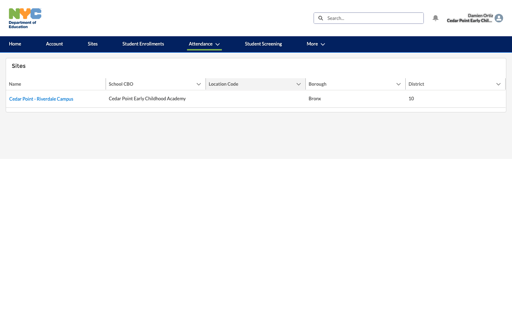
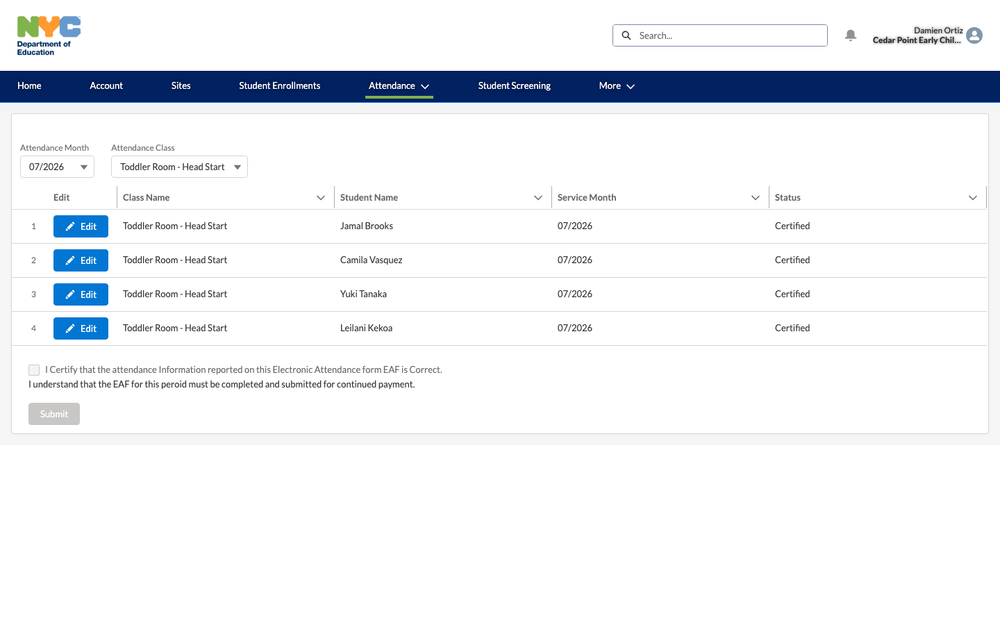
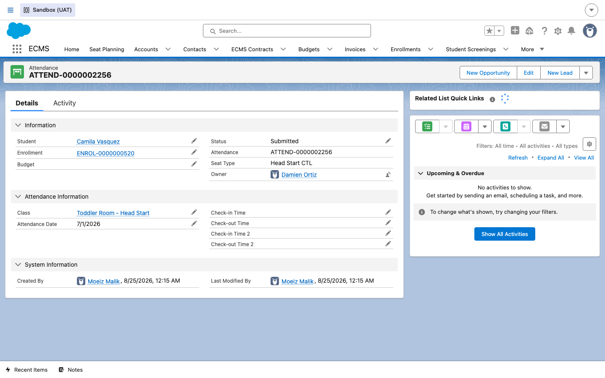

Attendance (CBO)
How a CBO's Attendance Taker records daily attendance for enrolled students in the vendor portal, and how the CBO formally certifies a full month of attendance once it's complete.
Overview
Once a child is actively enrolled at a site (see the Enrollment guide), the CBO is responsible for recording that child's attendance every day they're in care. This is done from the CBO's own vendor portal login — typically by a site-level staff member with the Attendance Taker function, the same portal login used throughout this guide (Damien Ortiz at Cedar Point – Riverdale Campus). Attendance is entered day by day through the portal's Weekly Attendance screen, then at the end of each month the CBO reviews the whole month and formally certifies it — a sign-off that the recorded attendance is accurate.
Steps
1Open the Attendance menu
DO From the vendor portal's top navigation bar, click Attendance.
RESULT A dropdown opens with three options: Weekly Attendance (day-by-day entry for one student's week), Daily Attendance (a single day across a whole class), and Monthly Review (the certification screen used in later steps).

2Choose the site
DO Click Weekly Attendance, then click the site you want to record attendance for.
RESULT A Sites list loads, scoped to only the site(s) this portal user was provisioned for — here, just Cedar Point - Riverdale Campus.

3Choose the class
DO Click the site name, then click the class whose students you want to take attendance for.
RESULT A Classes list loads for the selected site — here, Toddler Room - Head Start, a Birth-To-Five (BTF) Head Start CTL class.

4Pick the student
DO Click the class name, then click the specific student you're recording attendance for.
RESULT A Students roster loads for the class,
listing every actively enrolled student — including Camila Vasquez, whose
enrollment (ENROL-0000000520) is used for the rest of this guide.

5Record the week's daily attendance
DO Click the student's name. For each day of the displayed week, use the Status dropdown to mark the student Present, Absent, or another applicable status, then click Save.
RESULT A weekly grid opens for the student, defaulted to the current week (Mon 09/14/2026 – Fri 09/18/2026), with a Status dropdown for each day. This is the day-by-day entry that builds up the month's attendance record.

6Review an already-recorded week
DO Use the Week date field to jump back to a past week — for example, Jul 13, 2026.
RESULT The grid reloads showing that week's already-recorded statuses (Present for every weekday, Mon 07/13 – Fri 07/17), and a banner appears: “Attendance for the month July 2026 is certified by on Jul 31, 2026.” Because July has already been certified, Save is disabled — certified months are locked from further attendance edits.

7Open Monthly Review to certify
DO Click Attendance in the top navigation again, then click Monthly Review, then click the site.
RESULT The same site-scoped Sites list loads, this time leading into the certification workflow rather than day-by-day entry.

8Select the month and class to certify
DO Click the site, then set Attendance Month to 07/2026 and Attendance Class to Toddler Room - Head Start.
RESULT A roster table loads listing every student in the class for that service month, each with a Status column — here, all four students (Jamal Brooks, Camila Vasquez, Yuki Tanaka, Leilani Kekoa) already show Certified. Below the table is the certification checkbox: “I Certify that the attendance Information reported on this Electronic Attendance form EAF is Correct”, followed by Submit. Because this month is already certified, both the checkbox and Submit are disabled.

9Confirm the record behind the scenes
DO (Optional, internal admin view.) On the ECMS internal Salesforce
app, open one of the individual daily Attendance records that rolled up into the
certified month, e.g. ATTEND-0000002256 for Camila Vasquez, 7/1/2026.
RESULT The Attendance record detail shows the fields entered from the portal's weekly grid — Student, Enrollment, Class, Attendance Date, and Status (here, Submitted) — plus the empty Check-In/Check-Out and second Check-In/Check-Out pairs used only for TITO seats. Every one of these daily records for a student and month is what the Monthly Attendance certification in step 8 rolls up and locks.
